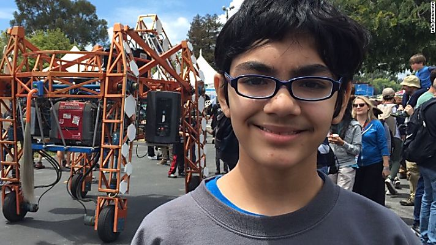
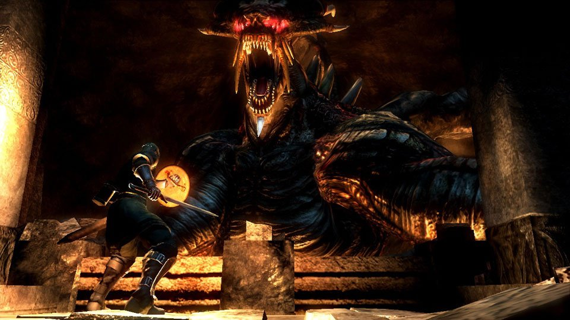

Tech
>

Genius kid with a bright future in engineering
- Google has a new phone in the works
- Will Sony ever support a handheld properly?
- How old does a game have to be to be considered retro?
- VR the future or just something to make gamers less apt to go outside?
Entertainment
>

Demon's Souls Dragon God too simple?
- Are the Souls series of game too difficult to tackle by casual players?
- If one were to start out in the game what is the best class?
- How long does it take before you can beat things without worry?
- Is this game addicting?
Random topics
>

Will Speedwagon ever fight?
- When is Hamon coming back?
- Was Joseph Joestar gay?
- Will Okiyasu find love?
- More Jojo's theories